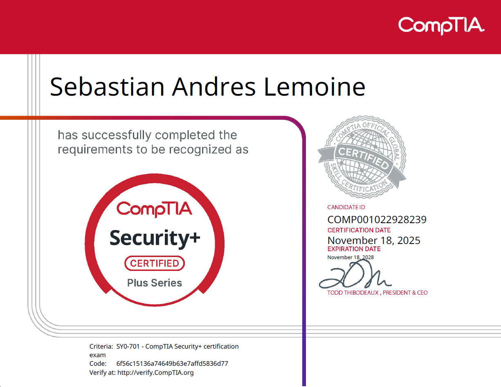

Certification Overview | Cybersecurity Foundations
CompTIA Security+ (SY0-701) es una de las certificaciones de ciberseguridad más reconocidas y demandadas a nivel mundial para profesionales que inician o consolidan su carrera en seguridad informática. Desarrollada por CompTIA, valida las competencias esenciales para proteger infraestructuras, sistemas y datos frente a las amenazas actuales.
Esta certificación acredita conocimientos en seguridad de redes, gestión de riesgos, análisis de vulnerabilidades, respuesta a incidentes, arquitectura y diseño de seguridad, gestión de identidades y accesos (IAM), criptografía, seguridad en la nube y aplicación de controles de seguridad basados en las mejores prácticas de la industria.
Su enfoque combina fundamentos teóricos con escenarios prácticos, preparando a los profesionales para desempeñar funciones en Centros de Operaciones de Seguridad (SOC), equipos de Blue Team, administración de sistemas y otros roles relacionados con la defensa de infraestructuras tecnológicas.
Reconocida internacionalmente por organizaciones públicas y privadas, CompTIA Security+ constituye una base sólida para el desarrollo profesional en ciberseguridad y sirve como punto de partida para certificaciones más avanzadas en áreas como análisis de amenazas, respuesta a incidentes, ingeniería de seguridad y operaciones de seguridad (SecOps).
Los conocimientos adquiridos en CompTIA Security+ proporcionan una base sólida para desempeñarse como SOC Analyst L1, permitiendo comprender el funcionamiento de las amenazas, analizar alertas de seguridad, interpretar eventos y registros, aplicar controles de seguridad y participar en la respuesta inicial ante incidentes. Además, facilita la identificación de vulnerabilidades, la evaluación de riesgos y la protección de infraestructuras siguiendo las mejores prácticas de la industria.

Certificación oficial obtenida como parte del desarrollo profesional en ciberseguridad.
En mi experiencia preparando y presentando la certificación CompTIA Security+, viví un proceso bastante intenso en el que tuve que combinar teoría, práctica constante y comprensión real de escenarios de ciberseguridad. Durante la preparación entendí rápidamente que esta certificación no se basa únicamente en memorizar conceptos, sino en desarrollar la capacidad de analizar situaciones similares a las que podrían ocurrir en un entorno corporativo real.
Para estudiar utilicé distintos recursos enfocados principalmente en práctica y repetición. Trabajé bastante con los cursos y exámenes de Jason Dion en Udemy, además de complementar con plataformas como ExamCompass y el material de Professor Messer. Algo que noté desde el inicio fue que responder preguntas constantemente ayudaba mucho más que simplemente leer teoría, porque CompTIA suele formular preguntas orientadas al análisis y a la toma de decisiones técnicas. Muchas veces no basta con saber una definición; hay que entender qué solución es más adecuada según el contexto del escenario.
Gran parte del estudio estuvo centrado en temas fundamentales de ciberseguridad como Threats, Attacks and Vulnerabilities, Identity and Access Management (IAM), Cryptography and PKI, Security Operations, Network Security y Governance, Risk and Compliance. A medida que avanzaba, empecé a relacionar muchos conceptos que antes veía separados y entendí cómo funcionan realmente. dentro de infraestructuras empresariales.
Security+ me ayudó mucho a ordenar ideas técnicas que había aprendido de manera dispersa y a comprender cómo se conectan entre sí dentro de operaciones defensivas reales.
Otro aspecto importante fue la preparación para las PBQ (Performance-Based Questions). Estas preguntas requieren interpretar escenarios, identificar configuraciones inseguras, analizar incidentes o aplicar controles de seguridad de manera práctica. Ahí fue donde practicar simulaciones y preguntas tipo examen se volvió muy importante, porque CompTIA evalúa bastante la capacidad analítica y no solamente la memoria.
La experiencia del examen me hizo notar que hay bastante enfoque en operaciones de seguridad, respuesta a incidentes, gestión de riesgos, autenticación, protocolos seguros, hardening y análisis de amenazas. Muchas preguntas presentan situaciones donde varias respuestas parecen correctas, pero solo una representa la mejor decisión desde una perspectiva de seguridad.